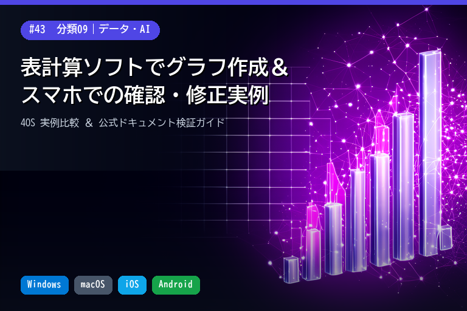

#43｜分類09: データ分析・科学計算・AI活用 2026-11-23

表計算ソフトでグラフ作成＆スマホでの確認・修正実例｜Windows・macOS・iOS・Android
「PCで作成した複雑なグラフやデータ表を、外出先でもすぐに確認したい」「現場で数値が変わった際、その場でスマホから修正して共有したい」といった悩みは、ビジネスや研究の現場で非常に多く聞かれます。
しかし、OSごとに操作体系が異なり、さらにモバイル端末との同期設定でつまずいてしまうことも少なくありません。この記事では、Windows、macOS、iOS、Androidの4つの環境において、表計算ソフトを使いこなし、いかにスムーズに「作成→共有→モバイル確認・修正」というワークフローを構築するかを徹底解説します。
4OS比較早見表
| 機能・項目 | Windows (Excel) | macOS (Numbers) | iOS (Numbers/Sheets) | Android (Sheets/Excel) |
|---|---|---|---|---|
| 主なソフト | Microsoft Excel | Numbers | Numbers / Google Sheets | Google Sheets / Excel |
| クラウド連携 | OneDrive | iCloud | iCloud / Google Drive | Google Drive |
| グラフ作成 | 高機能・高度な分析 | 直感的・自動レイアウト | タッチ操作に最適化 | タッチ操作に最適化 |
| モバイル同期 | OneDrive経由推奨 | iCloud経由（Apple製品） | 標準連携 | Googleドライブ連携が強力 |
| 互換性 | 業界標準 | Appleエコシステム内 | マルチプラットフォーム | マルチプラットフォーム |
1. Windows 11 での実例手順
Windows環境では、世界標準であるMicrosoft Excelを活用するのが最も確実な方法です。
公式手順：表から可視化されたグラフを作成・共有
- データ準備: Excelを開き、分析対象のデータを入力します。外部のCSVファイルを読み込む場合は、「ファイル」タブ → 「開く」→「テキスト (.txt) または CSV の読み込み」を選択します。
- グラフ作成: グラフ化したいデータ範囲を選択し、「挿入」タブから任意のチャートタイプ（棒グラフ、折れ線グラフなど）をクリックします。「デザイン」タブでタイトルや軸のラベルを調整します。
- スマホ共有準備: 「ファイル」→「保存先」からOneDriveを選択して保存します。これにより、iPhoneやAndroidのExcelアプリと自動的に同期されます。
Windows 標準機能での制限事項・代替手段
- 制限: ローカルPC版Excelでは、USBケーブルを繋がない限り直接スマホへグラフを転送することはできません。また、OneDriveに保存していないファイルはモバイルアプリで編集できません。
- 代替手段: 「共有」ボタンからリンクを作成し、「任意の人のアクセス許可を与える」設定を行うか、CSVとしてエクスポートしてスマホ側で再インポートします。
よくあるトラブルと解決法（Windows）
- 「テキストを列に区切らない」というエラー
- 原因: CSVを開く際、カンマやタブが改行文字として認識されるため。
- 解決: 「ファイル」→「開く」→「テキスト (.txt) または CSV の読み込み」ダイアログで「区切り文字（カンマ）」を選択してインポートし直すか、Excel内で「データ」タブ →「テキストを列に区切る」を実行します。
- グラフの軸ラベルが正しく表示されない
- 原因: データ範囲選択時に空行が含まれているため。
- 解決: グラフを選択し、「デザイン」→「データのソースの変更」で正しいセル範囲を指定し直します。
- スマホ側で編集できない（読み取り専用）
- 対策: OneDrive上の共有設定を確認。「リンクをコピー」後、チャットツール等に貼り付ける際、相手が「開く」→「オンライン表示と共同編集」を選択できる権限になっているか確認します。
2. macOS での実例手順
Macユーザーであれば、Apple純正のNumbersを活用することで非常にスムーズな操作感を得られます。
公式手順：表から可視化されたグラフを作成・共有
- データ準備: Numbersを開き、CSVを読み込む場合は「ファイル」→「インポート」→CSVを選択します。
- グラフ作成: データを選択し、「挿入」メニューからグラフを追加。「デザインとフォーマット」パネルでスタイルや色を調整します。Numbersは自動レイアウト機能が強力なため、データ追加に合わせてグラフが動的に更新される点に注意してください。
- スマホ共有準備: 「共有」ボタン →「iCloud ドライブ」で保存し、iPhone/iPadの「ファイル」アプリまたはNumbersアプリと同期させます。
macOS 標準機能での制限事項・代替手段
- 制限: NumbersはWindowsやAndroidとのネイティブ互換性が低く、CSVエクスポート時に数式やグラフが崩れることがあります。また、.numbers形式をAndroidで直接編集することはできません。
- 代替手段: 「ファイル」→「書き出し」からCSVを作成し、スマホ側でGoogleスプレッドシートやExcelアプリにインポートします。
よくあるトラブルと解決法（macOS）
- 「数式が計算されない」という現象
- 原因: Numbersの自動レイアウト機能により、セル範囲の再定義が行われ、参照元が変わったため。
- 解決: グラフを選択し、「データソース」を確認して正しい範囲を指定します。「表示オプション」でグリッド線を表示させて確認するのがコツです。
- グラフが意図せず更新される
- 対策: 編集前にもう一度「ファイル」→「書き出し」→CSVで保存し、スマホ側で再読み込みすることで、特定のバージョンを固定できます（数式は失われる点に注意）。
- iCloud シンクが止まっている
- 解決: 「システム設定」→「Apple ID」→「iCloud」でNumbersをオンにし、「ファイルの同期と共有」を確認します。
3. iOS（iPhone / iPad）での実例手順
モバイル端末では、Googleスプレッドシートがマルチデバイス間での最も汎用性の高いツールとなります。
公式手順：表から可視化されたグラフを作成・共有
- アプリ: Google スプレッドシートを使用します。
- データ準備: CSVファイルを「ファイル」→「インポート」→URLまたはアップロードを選択し読み込みます。
- グラフ作成: データ範囲を選択し、「挿入」→「図表」で種類を選びます。「編集する」ボタンから詳細設定を行い、タッチ操作で軸や凡例を調整します。
- 共有・修正: 「ファイル」→「共有」でリンクを作成。共同編集機能により、他のデバイス（AndroidからiOSなど）とリアルタイムでの修正が可能です。
iOS 標準機能での制限事項・代替手段
- 制限: 高度なマクロやVBAは非対応です。「ファイル」→「書き出し」でCSVやPDFに変換する必要があります。
- 代替手段: Excel/Numbersで作成したグラフは、CSVエクスポート後にGoogleスプレッドシートにインポートする必要があり、複雑なフォーマットは失われる可能性があります。
よくあるトラブルと解決法（iOS / Android）
- 「データが正しく読み込まれない」（区切り文字認識エラー）
- 原因: CSVに改行が含まれていたり、日本語の全角カンマが使われていたため。
- 解決: Googleスプレッドシート上で「ファイル」→「インポート」→テキスト形式を選択し、「区切り文字（カンマ）」を指定して再読み込みします。
- 「グラフがスマホ画面に収まらない」
- 対策: 「図表のオプション」から「軸のラベル」「凡例」を表示/非表示を使い、スペースを確保します。
- 「共同編集中にデータが消失した」
- 原因: 自動保存機能の不具合やネットワーク切断による同期遅延。
- 解決: 「ファイル履歴」（バージョン管理）から以前の状態に戻します。「共有」設定で「すべてのユーザーに書き込み権限を与える」ことを確認してください。
4. Android での実例手順
Android端末では、Googleスプレッドシートとの親和性が非常に高く、システム標準のファイル管理と連携しやすいのが特徴です。
公式手順：表から可視化されたグラフを作成・共有
- アプリ: Google スプレッドシート（iOSと同様）。
- データ準備: CSVファイルを「インポート」し読み込みます。
- グラフ作成: データ範囲を選択し、「挿入」→「図表」で種類を選びます。スマホ画面でもタッチ操作で軸や凡例を調整可能です。
- 共有・修正: 「ファイル」→「共有」でリンクを作成。AndroidからiOSなど、OSを跨いだ共同編集もスムーズです。
Android 標準機能での制限事項・代替手段
- 制限: 高度なマクロやVBAは非対応。「ファイル」→「書き出し」でCSVやPDFに変換する必要があります。
- 機種依存: Pixelは「Googleフォルダ」を標準表示しやすく、GalaxyなどはSamsungファイルアプリとの連携など、メーカー独自の挙動がある場合があります。
よくあるトラブルと解決法（iOS / Android）
- 「データが正しく読み込まれない」（区切り文字認識エラー）
- 原因: CSVに改行が含まれていたり、日本語の全角カンマが使われていたため。
- 解決: Googleスプレッドシート上で「ファイル」→「インポート」→テキスト形式を選択し、「区切り文字（カンマ）」を指定して再読み込みします。
- 「グラフがスマホ画面に収まらない」
- 対策: 「図表のオプション」から「軸のラベル」「凡例」を表示/非表示を使い、スペースを確保します。
- 「共同編集中にデータが消失した」
- 原因: 自動保存機能の不具合やネットワーク切断による一時的な同期遅延。
- 解決: 「ファイル履歴」（バージョン管理）から以前の状態に戻します。「共有」設定で「すべてのユーザーに書き込み権限を与える」ことを確認してください。
よくあるトラブルと解決チェックリスト
| エラー・現象 | 原因の可能性 | 解決策・対処法 |
|---|---|---|
| CSVを開くと文字化けする | 文字コード（UTF-8 / Shift-JIS）の不一致 | Excelの「データ」タブから「テキストから取得」を使い、元のファイル形式を指定して取り込む。 |
| グラフの範囲がズレる | 空白行や不要な列が含まれている | グラフを選択し、「データのソースの変更」で正確なセル範囲（例: A1:D50）を再指定する。 |
| スマホで開くと数式が消える | CSVエクスポート時の仕様 | 数式を保持したい場合はCSVではなく、Googleスプレッドシートへの直接共有またはOneDrive経由のExcelアプリ使用を検討する。 |
| 同期が反映されない | 通信環境やキャッシュの問題 | アプリを再起動するか、ブラウザ版で開き「リロード」を実行。ファイル履歴から最新の状態を確認する。 |
まとめ：快適なマルチOS環境を作るポイント
4つのOSを跨いでデータ分析を行う際、最も重要なのは「データの共通言語（CSVまたはGoogleスプレッドシート）」を意識することです。
また、より高度でストレスのない環境を構築するために、以下の要素を検討することをお勧めします。
- 大容量メモリ・GPU搭載PCの活用: 数万行を超える大規模なデータセットをExcelやNumbersで処理する場合、計算リソース不足を防ぐために必要になります。特に複雑なグラフ描画や高度な関数を多用する際は、快適な動作に直結します。
- 外付けNVMe SSDの導入: 大量のCSVファイルを管理・保管する場合、高速な読み込み速度は作業効率を劇的に向上させます。バックアップ用途だけでなく、アクティブなプロジェクトデータの置き場所として非常に有効です。
- AIツールの活用（補足）: 各ソフトに搭載されている「インサイト」機能や、GoogleスプレッドシートのAI連携などは標準機能とは別に用意された強力なツールです。これらを組み合わせることで、グラフ作成の先にある「分析」の精度をさらに高めることができます。
適切なデバイスとツールを組み合わせることで、PCでの緻密な分析とスマホでの機動的な確認・修正が融合した、次世代のワークフローを実現しましょう。
参考文献・公式ドキュメント（一次情報ソース）
本記事の手順・仕様は以下の各OSおよびツールの公式ドキュメントに基づいています。OSアップデートによりメニュー名称や挙動が変わる場合があるため、最新仕様の確認にもご活用ください。
- [Windows] テキスト (.txt) または CSV ファイルをインポートまたはエクスポートする - Microsoft サポート
- [macOS] Mac用Numbersユーザガイド（CSV読み込み・書き出し） - Apple サポート (日本)
- [iOS / Android / 共通] Google スプレッドシートでデータセット・CSVを読み込む - Google ドキュメント エディタ ヘルプ